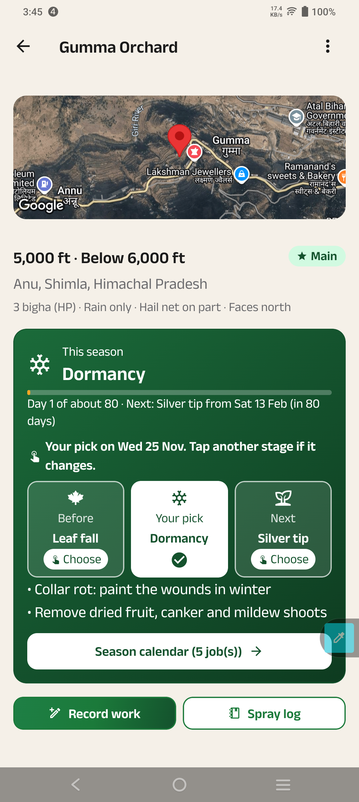
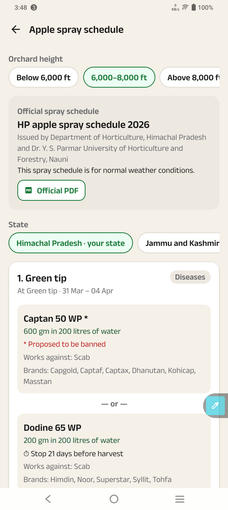

Mockup: flatter, calmer surfaces
Same data, same features, same colours and fonts. Only how the pieces sit on the screen changes. Left: the app on your phone today. Right: the same screen with the five rules below. If you like it, these rules go into the design kit (Card, a new Stat, spacing), so every screen gets them, not just these two.
1 · A card is white with a thin borderNo shadow on cards any more. Shadows only for things that float: sheets and the bottom bar.
2 · No box inside a boxInside a card, parts are split by thin lines, not grey boxes. Grey boxes stay only directly on the page.
3 · More air between sections24 px between sections, 12 px inside one. The eye sees groups instead of a long list.
4 · Big numbers for what mattersAltitude, trees, dose: large number, small label under it (a new Stat part).
5 · Three text levels per cardA title, a line of text, one small note. Today the season card mixes six sizes.
Orchard page
Before

After
←Gumma Orchard⋮
Anu, Shimla, Himachal Pradesh ★ Main
Below 6,000 ft · 3 bigha · rain only · hail net on part · faces north
5,000 ft
Altitude
60
Trees
2
Blocks
This season
Dormancy
Day 1 of about 80 · Silver tip next, from 13 Feb
BeforeLeaf fall
Your pickDormancy ✓
NextSilver tip
- Collar rot: paint the wounds in winter
- Remove dried fruit, canker and mildew shoots
Season calendar · 5 jobs →
✎ Record work
▤ Spray log
Spray plan Notifications
Dark Baron Gala
Protected until Thu 3 Dec, 6 am (your spray of 23 Nov)
Baggugosha
No official schedule for your state yet
Recent sprays
Copper Oxychloride · Mon 23 Nov
Urea 5% · Mon 23 Nov
- Altitude, trees and blocks become a stat row you read at a glance, instead of a grey line of text.
- The season card loses three text sizes: one heading, one line, the picker, the jobs, one button.
- Spray plan: one white card with lines between blocks. The grey "Recent sprays" box becomes the last row.
- "Protected" / "No plan" as a small pill on the right, so the status is the first thing you see.
Spray schedule (one stage)
Before

After
←Apple spray schedule
Below 6,000 ft6,000–8,000 ftAbove
PDF
HP apple spray schedule 2026
Dept. of Horticulture HP · Dr YS Parmar University, Nauni · for normal weather
Himachal Pradesh · your stateJammu and Kashmir
1 · Green tip
31 Mar – 4 Apr
Captan 50 WP
600 g in 200 L water
ScabProposed ban
Show 6 brands ▾
or
Dodine 65 WP
200 g in 200 L water
Scab⏱ Stop 21 days before harvest
Show 5 brands ▾
or
Fluxapyroxad + Difenoconazole SC
60 ml in 200 L water
Scab · Powdery mildew⏱ 33 days
Show 1 brand ▾
- No grey boxes inside the white card: each choice is a row, the "or" is a thin dashed line.
- The dose is the headline (big green number), because that's what a grower mixes.
- "Stop N days before harvest" and "Proposed ban" become small coloured chips you can't miss.
- Brand lists are folded behind "Show brands", so the stage fits on one screen.
- Nothing removed: height and state chips, the official PDF (tap the PDF tile) and the "normal weather" note stay.
What changes in the code (if you say yes)
- Design kit (all screens at once):
Carddrops its shadow; a newStat/StatRow; aCardRowfor hairline rows; section spacing 24 px inScreen. - Then screen by screen: the 13 places with a grey box inside a card become rows (orchard page, spray schedule, plan, weather notes…), starting with the two above.
- No API, words or features change. Hindi gets the same layout (the numbers and pills don't depend on the language).